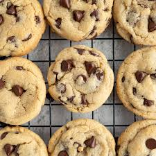

The history of the chocolate chip cookie probably is a lot less complicated than you might be thinking it is. There weren't any elaborate tests determining which sweet would taste the best, but instead, the creation of the chocolate chip cookie was nothing but a pure accident. It all started in the small town of Whitman Massachusetts in a restaurant called the Toll House. The woman behind the science was named Ruth Wakefield.
She was creating a batch of cookies known as butter-drop cookies when she realized she had run out of baker's chocolate. To improvise, she decided to substitute the baker's chocolate for a chocolate bar that she broke apart. To her surprise, the chocolate chunks stayed in their shape instead of melting into the cookie dough like the baker’s chocolate would do. She served this new cookie, and soon it was a widespread treat that to this day is enjoyed by millions of people.
Ingredients
8 tablespoons of salted butter
1/2 cup white sugar
1/4 cup packed light brown sugar
1 teaspoon vanilla
1 egg
1 1/2 cups all purpose flour
1/2 teaspoon baking soda
1/4 teaspoon salt
3/4 cup chocolate chips

Directions
Melt butter all the way down and let it cool for a few minutes.
Beat butter and sugar together. Get it flufffy.
Add egg and vanilla Don't overmix.
Mix in all the dry ingredients.
Add in chocolate chips. You can add some extra!
Roll cookies up into1 inch balls bake! Bake at 375 degrees!
Tips
Don't overcook the cookies
Melt the butter all the way down
Add mutiple kinds of chocolate chips
Make sure the cookie balls are one inch
Video:
Reference List Entry
Cookies, C. (2024, January 12). The history and origins of chocolate chip cookies.
The Cravory
Ostrom, L. (2023, January 11). The best soft chocolate chip cookies. Pinch of yum.